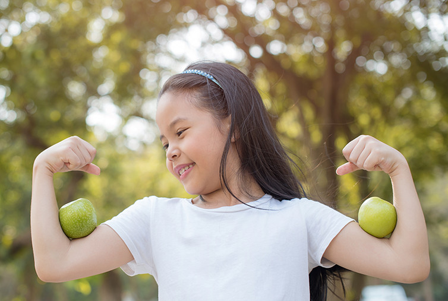
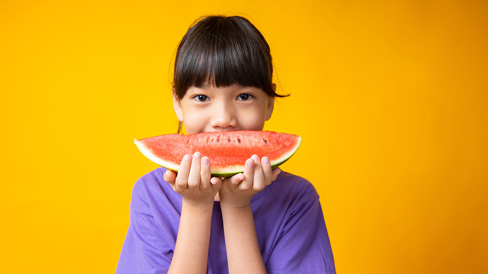
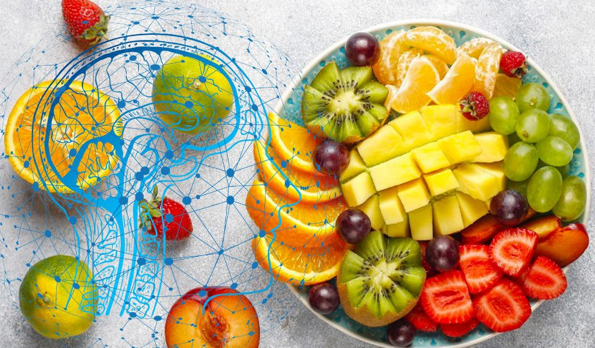
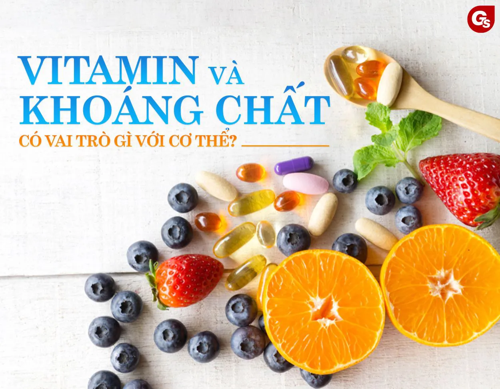

‖ Top 5 lợi ích sức khỏe của việc ăn trái cây mỗi ngày

Một công trình nghiên cứu có quy mô lớn và lâu đời nhất đến nay của Harvard là NHS (Nurses’ Health Study) và HPFS (Health Professionals Follow-up Study) đã cho thấy ăn nhiều trái cây (và rau củ) mỗi ngày làm giảm nguy cơ phát triển bệnh tim. Những người ăn trung bình 8 khẩu phần trở lên mỗi ngày có nguy cơ bị đau tim hoặc đột quỵ thấp hơn 30% so với những người ăn ít hơn 1,5 khẩu phần mỗi ngày. Nghiên cứu cũng phát hiện ra rằng việc ăn nhiều trái cây (đặc biệt là việt quất, nho và táo) có thể giúp giảm nguy cơ phát triển bệnh tiểu đường tuýp 2.
Trái cây có thể giúp điều hòa huyết áp. Dựa trên kết quả của việc nghiên cứu chế độ ăn uống DASH (The Dietary Approaches to Stop Hypertension) – chế độ ăn uống giàu trái cây, rau củ và các sản phẩm từ sữa ít béo, đã phát hiện ra rằng những người bị huyết áp cao tuân theo chế độ ăn uống này đã giảm huyết áp tâm thu (ứng với số trên của máy đo huyết áp) khoảng 11 mm Hg và huyết áp tâm trương (ứng với số dưới của máy đo huyết áp) gần 6 mm Hg — hạ tương đương với việc uống thuốc. Trái cây (và rau củ) cũng có thể bảo vệ cơ thể chống lại một số bệnh ung thư như ung thư vú, miệng, cổ họng, thanh quản, thực quản và dạ dày. Vì vậy, hãy ăn nhiều trái cây mỗi ngày và bạn cùng gia đình mình có thể sống lâu hơn và khỏe mạnh hơn.

Một trong những lợi ích lớn nhất của trái cây là chứa nhiều chất xơ. Theo Bộ Nông nghiệp Hoa Kỳ (USDA), chất xơ làm giảm nồng độ cholesterol trong máu và điều đó giúp hạn chế nguy cơ mắc bệnh tim. Chất xơ cũng rất quan trọng đối với sức khỏe đường ruột, nó giúp ngăn ngừa táo bón, bệnh trĩ và bệnh viêm túi thừa. Thực phẩm giàu chất xơ và ít calo cũng có thể giúp giảm cân (hoặc duy trì cân nặng) vì chúng khiến cơ thể cảm thấy no lâu hơn.

Đa số tất cả trái cây đều là những chất giúp tăng cường trí não, một nghiên cứu năm 2012 cho thấy ăn quả mọng đặc biệt có lợi cho trí não. Theo các nhà nghiên cứu: “Có bằng chứng khoa học mạnh mẽ cho thấy việc ăn việt quất, mâm xôi đen, dâu tây và các loại quả mọng khác có tác dụng hữu ích đối với não bộ và có thể giúp ngăn ngừa chứng mất trí nhớ do tuổi tác và những thay đổi khác”.

Khá chắc rằng các loại Vitamin cần thiết cho cơ thể có thể được tìm thấy đầy đủ trong nhiều loại trái cây khác nhau. Đối với khoáng chất cũng vậy. Cơ thể chúng ta cần vitamin và khoáng chất để luôn khỏe mạnh và tiếp tục hoạt động. Một số khoáng chất như canxi và kali, rất quan trọng đối với sự tồn tại của chúng ta. Ví dụ, tim của chúng ta cần cả natri và kali để tiếp tục bơm máu. Kali có thể được tìm thấy nhiều trong bơ, chuối, cam, đào và kiwi. Một nghiên cứu năm 2011 của Đại học Bang Florida cho thấy ăn mận khô có thể giúp ngăn ngừa loãng xương, bơ cũng giúp làm cho xương trở nên chắc khỏe hơn.

Gốc tự do là những nguyên tử nhỏ không ổn định khiến chúng ta già đi nhanh hơn, chúng phá hủy các tế bào khỏe mạnh và thậm chí gây ung thư. Chất chống oxy hóa là những chất giúp chống lại các gốc tự do này. Tuy đa phần các loại trái cây đều có chứa chúng (dù nhiều hay ít), nhưng nhiều nghiên cứu đã chỉ ra trái cây chín đặc biệt chứa nhiều chất chống oxy hóa hơn cả.